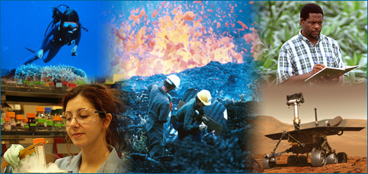

WHAT IS SCIENCE?
The word "science" probably brings to mind many different pictures: a fat textbook, white lab coats and microscopes, an astronomer peering through a telescope, a naturalist in the rainforest, Einstein's equations scribbled on a chalkboard, the launch of the space shuttle, bubbling beakers …. All of those images reflect some aspect of science, but none of them provides a full picture because science has so many facets:

- Science is both a body of knowledge and a process. In school, science may sometimes seem like a collection of isolated and static facts listed in a textbook, but that's only a small part of the story. Just as importantly, science is also a process of discovery that allows us to link isolated facts into coherent and comprehensive understandings of the natural world.
- Science is exciting. Science is a way of discovering what's in the universe and how those things work today, how they worked in the past, and how they are likely to work in the future. Scientists are motivated by the thrill of seeing or figuring out something that no one has before.
- Science is useful. The knowledge generated by science is powerful and reliable. It can be used to develop new technologies, treat diseases, and deal with many other sorts of problems.
- Science is ongoing. Science is continually refining and expanding our knowledge of the universe, and as it does, it leads to new questions for future investigation. Science will never be "finished."
- Science is a global human endeavor. People all over the world participate in the process of science. And you can too!
TYPES OF CHANGES IN BOYS AND GIRLS
| GIRLS PHYSICAL CHANGES |
BOYS PHYSICAL CHANGES |
- Hip widens
- There is weight gain, particularly on the hips.
- Muscles get bigger and stronger,
but they do not show up as much as boys' muscles.
|
- Boys gain weight.
- Shoulders get wider.
- Muscles start to get bigger and stronger
- voice becomes deeper
|
Social Changes in Boys and Girls
- busy working out who they are and where they fit in the world.
- Seek more freedom
- Seeking more worth or trust
- looking for new experiences
- thinking more about "right" and "wrong"
- swayed easily by friends
Emotional Changes in Boys and Girls
- Shows strong feelings and intense emotions at different times.
- is more sensitive to other people‟s emotions
- Take notice about physical appearance and changes.
Psychological Changes in Boys and Girls
- anti-social behaviour
- risk-taking behaviour